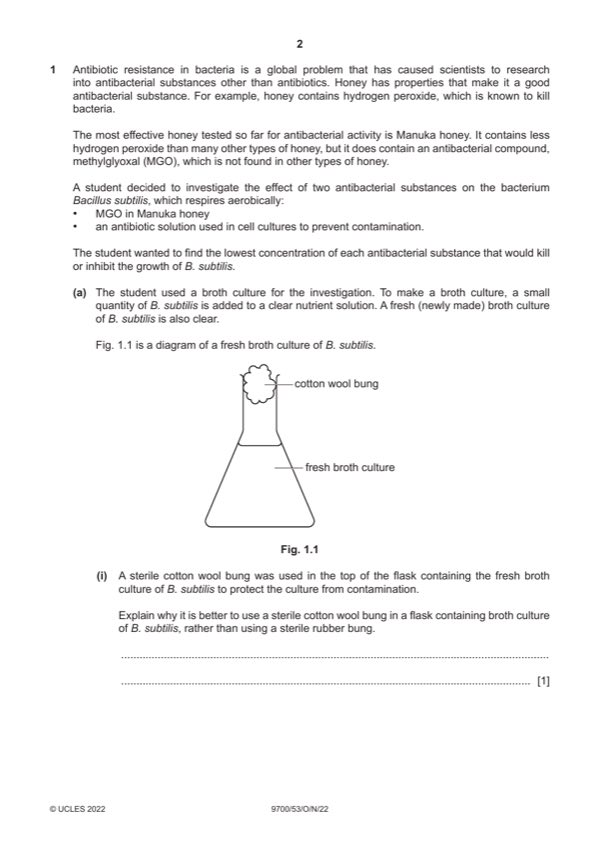

Question 1

Original paper page 2
Part 1(a)(i) — solution
to allow, oxygen / air, to enter for respiration 1
or
because, bacterium / B. subtilis, respires aerobically / AW ;
Mark points
- Include the ideas shown in the solution above.
Part 1(a)(ii) — solution
as, population growth of bacteria / bacterial growth, increases / AW, the, cloudier / more turbid, the culture broth 1
or
measuring the, turbidity / cloudiness, by eye against a cross in background / with a colorimeter / turbidity meter /
colour chart ;
Mark points
- Include the ideas shown in the solution above.
Part 1(b) — solution
replace antibiotic with, (distilled) water / nutrient solution ; 1
Mark points
- Include the ideas shown in the solution above.
Part 1(c) — solution
can improve: 2
add, catalase / peroxidase / manganese(IV) oxide ;
explain why:
results / effect / killing, B. subtilis / bacteria , is only due to, honey / MGO
or
results / effect / killing, B. subtilis / bacteria, is not due to hydrogen peroxide ;
Mark points
- Include the ideas shown in the solution above.
Part 1(d) — solution
description or table or diagram for 10%: 2
Mark points
- Include the ideas shown in the solution above.
Part 1 — solution
Correct method to dilute stock (honey) solution to 10% ;
table
Mark points
- Include the ideas shown in the solution above.
Part 1(e) — solution
independent variable 2
MGO / Manuka / honey, concentration ;
dependent variable
turbidity ;
2022 Page 5 of 11
9700/53 Cambridge IGCSE – Mark Scheme October/November 2022
Mark points
- Include the ideas shown in the solution above.
Part 1(f) — solution
predict: 2
lower concentration, tubes / AW, will be, turbid / cloudy
or
higher concentration, tubes / AW, will be, clear / not cloudy
or
the lower the concentration the more, turbid / cloudy, the tubes / AW ; ora
explain:
MGO / (Manuka) honey, inhibits the growth of / kills, B. subtilis / bacteria
or
lower concentrations have less, ability / MGO, to, inhibit the growth of / kill, B. subtilis / bacteria ; ora
2022 Page 6 of 11
9700/53 Cambridge IGCSE – Mark Scheme October/November 2022
Mark points
- Include the ideas shown in the solution above.
Part 1(g) — solution
any five from: 5
Mark points
- Include the ideas shown in the solution above.
Part 1 — solution
same / stated, volume of, culture / broth used ;
Mark points
- Include the ideas shown in the solution above.
Part 1(h)(i) — solution
there is no difference in the effect / effectiveness, of Manuka (honey) and Germania (honey) ; 1
2022 Page 7 of 11
9700/53 Cambridge IGCSE – Mark Scheme October/November 2022
Mark points
- Include the ideas shown in the solution above.
Part 1(h)(ii) — solution
yes 1
yes ;
no
Mark points
- Include the ideas shown in the solution above.
Part 1(h)(iii) — solution
results: 2
Manuka honey, kills more bacteria / is more effective (than Germania) ; ora
statistical analysis:
first three / 1, 2 and 3, are significantly different
or
last two / 4 and 5, not significantly different against MRSA
or
Mark points
- Include the ideas shown in the solution above.
Part 1 — solution
- is only significant at p = 0.05
Mark points
- is only significant at p = 0.05
Part 1 — solution
the (mean) milk yields are, very close / similar, between groups ;
Mark points
- Include the ideas shown in the solution above.
Part 1 — solution
trend that as gossypol (in diet) increases, milk yield increases ; ora
Mark points
- Include the ideas shown in the solution above.
Part 1 — solution
(Group) E has the highest risk (of toxicity)
or
(Group) C has the lowest risk (of toxicity) ;
Mark points
- Include the ideas shown in the solution above.